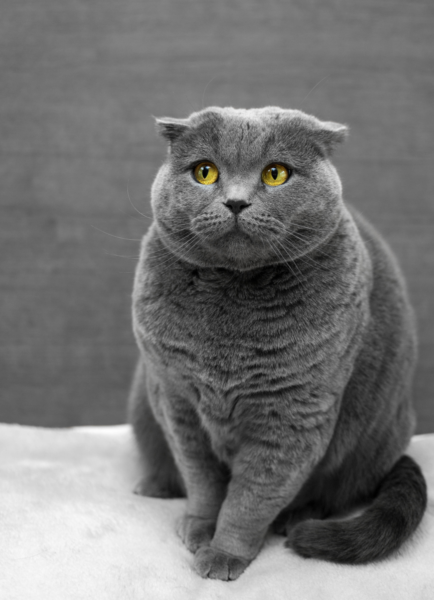

Which is the most lazy cat breed?
The Ragdoll, as its name suggests, is known to be a relaxed sort of cat
that just flops in its owner's arms. While these cats are not as 'floppy'
and doll-like as was originally believed, they are certainly not energetic.
They like to lie around, and their favourite 'activity' is probably being
picked up and petted by their owners. So if you want to a cat to relax with
after a hard day's work, the Ragdoll may be the breed for you.